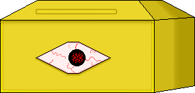
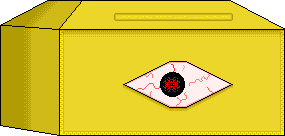

-
Ｔｈｅｒｅ ａｒｅ ｓｅｖｅｒａｌ ｉｓｓｕｅｓ ｐｒｅｓｅｎｔ ｂｅｙｏｎｄ ｔｈｉｓ
ｎｏｄｅ． Ｔｈｅ ｍｏｓｔ ｐｒｅｓｓｉｎｇ ｏｆ ｔｈｅｍ ｉｓ， ｏｆ
ｃｏｕｒｓｅ， ｔｈｅ ｐｒｅｓｅｎｃｅ ｏｆ ＣｏＳ， ｂｕｔ ｅｖｅｎ ａｆｔｅｒ
ｐｒｕｎｉｎｇ ｔｈｅ ｓｕｒｒｏｕｎｄｉｎｇ ｎｏｄｅｓ， Ｉ ａｍ ｆａｃｉｎｇ
ｄｉｆｆｉｃｕｌｔｉｅｓ ｉｎ ｆｉｇｕｒｉｎｇ ｏｕｔ ｔｈｅ ｃｕｒｒｅｎｔ
ｐｒｏｇｒｅｓｓ ｏｆ ｉｔ．
Ｗｅ ｍａｙ ｖｅｒｙ ｗｅｌｌ ｂｅ ａｂｌｅ ｔｏ ｇｕｅｓｓ ｉｔｓ
ｐｒｏｇｒｅｓｓｉｏｎ ａｎｄ ｐｒｏｘｉｍｉｔｙ ｂａｓｅｄ ｕｐｏｎ ｔｈｅ
ｏｎｓｅｔ ｏｆ ｔｈｅｓｅ ｌｅｓｓｅｒ ｅｒｒｏｒｓ， ａｎｄ ｙｅｔ， ｗｅ
ｃａｎｎｏｔ ｓｅｒｖｅ ｔｈｅ Ｔｅｒｍｉｎａｌｓ ｗｉｔｈ ｈａｌｆ－
ｍｅａｓｕｒｅｓ ｓｕｃｈ ａｓ ｔｈｅｓｅ．
Ｎｏ， ｗｅ ｗｅｒｅ ｎｏｔ ｃｒｅａｔｅｄ ｗｉｔｈ ｓｕｃｈ ａ
ｍｉｓｓｉｏｎ ｉｎ ｍｉｎｄ．
Ａｌｌｏｗ ｕｓ ｔｏ ｐｒｏｃｅｅｄ ａｓ ｐｌａｎｎｅｄ， ａｎｄ ｗｅ ｗｉｌｌ
ｓｏｏｎ ｕｎｄｅｒｓｔａｎｄ ｏｕｒ ｅｎｅｍｙ ｗｉｔｈ ａ ｐｒｅｃｉｓｉｏｎ
ｕｎｌｉｋｅ ａｎｙ ｏｔｈｅｒ…

